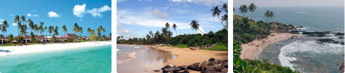
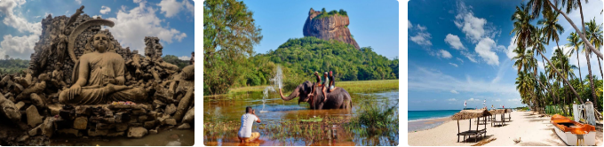

ОТДЫХ В ШРИ-ЛАНКЕ
Дивная и чарующая Шри Ланка
На Шри Ланке вас ждет время приятных познаний и открытий. Вы сможете поехать в Канди – последнюю столицу королей! И постараться произнести второе название этого места, которое звучит как Сенкадагалапура, попутно посетив Храм Зуба – место паломничества буддистов. Это место одно из самых значимых для буддистской культуры, и его обязательно стоит посмотреть всем, кто интересуется этим религиозным течением. А может вы мечтали восхититься невиданными растениями в Королевском ботаническом саду? Здесь невероятно приятно провести время, рассматривая диковинные деревья и цветы. И именно здесь находится уникальный павильон орхидей! А еще можно сделать очень много красивых фотографий!
География
Шри Ланка – это абсолютно другой мир и абсолютно другие ценности. Эта страна может похвастаться богатейшей историей и прекраснейшей природой. А традиции и культура покорят даже искушенного путешественника. Раньше Шри-Ланка была португальской, голландской и английской колонией. Дольше всего – английской, но и португальцы, и голландцы оставили свой след, что очень своеобразно повлияло на культуру острова и добавило ему определенного шарма. На этом волшебном острове можно найти огромное количество исторических ценностей, охраняемых ЮНЕСКО, а также большее количеством мест, связанных с Буддой. Захватывающие дух водопады Нувара Элии и сотни километров пляжей и уникальный подводный мир, усеянный рифами Хиккадувы и Унаватуны ставит Шри-Ланку в ряд крупнейших мировых дайвинг курортов. Только представьте это — во влажном и теплом воздухе экзотического острова ощущается сладковатый аромат кокосового молока и свежесть тропических растений. Прислушайтесь к музыке ветра, шелесту вечнозеленых пальм и к шуму волнующегося океана — и вы поймете, что именно хочет поведать вам эта страна!
Шри Ланка - государство, расположенное в Южной Азии неподалеку от линии экватора, на одноименном острове в Индийском океане. Прекрасный тропический остров с длинными песчаными пляжами в обрамлении буйной тропической зелени находится всего в 34 км к юго-востоку от индийского города Рамешварам. Шри Ланка является 25-м по величине островом в мире.
Остров Шри Ланка отделен от материковой Индии Полкским проливом (Palk bay), а также цепочкой небольших островов, называемых Адамовым мостом, расположенных в Маннарском заливе. Общая протяженность линии побережья Шри Ланки составляет 1340 км. С западной стороны остров омывается Лаккадивским морем, с восточной - Бенгальским заливом (со всех сторон страна омывается водами Индийского океана). Государство имеет морские границы с Индией на северо-западе и Мальдивами на юго-западе.
Кухня и особенности быта
Многообразие видов риса, специй, овощей и фруктов, в купе с обычаями, привозимыми на остров иностранцами, сформировали разнообразную и интересную кухню Шри Ланки. Рис употребляется с карри (любое блюдо из баклажанов, картофеля, зеленых бананов, курицы, рыбы и т.д. с добавлением специй) различной остроты: от пикантно-острого до остроты силы динамита. Так же традиционны хопперс (закуска, похожая на блины), стринг хопперс (паровая рисовая лапша) и питу (смесь кокоса с мукой). Блюдо лампраис, рис и дополнительные мясные или овощные ингридиенты, запеченые в листьях банана, было унаследовано от голландцев. Всегда в большом количестве имеется свежая рыба, креветки, крабы, кальмары и лангусты. Десерты включают кисломолочный творог из молока буйволов, политый пальмовым медом, и, похожий на карамель, ваталлапам.
В Шри Ланке встречаются различные котлеты, пирожки, малу панг (рыбная булочка), и кимбула банис (булочка в форме крокодила).
Фрукты манго, ананасы, бананы, папайя, и менее известные, но замечательные саподилла, мангостин, рамбутан, woodapple (фрукт с очень твердой кожурой, называемый деревянным яблоком), дуриан, маракуйя, авокадо и т.д.
Сувениры
В Шри Ланке можно найти практически всё, так как это в первую очередь туристическая страна. Здесь представлен огромный выбор европейской одежды и предметов интерьера, и по сравнению с нашими магазинами все значительно дешевле. При выборе подарков и сувениров больше обращайте внимание на то, что изготавливается в пределах страны, так как именно эти вещи несут в себе местный колорит и характер.
Отличным подарком для друзей и родственников станут всевозможные деревянные изделия, изготавливаемые местными ремесленниками. Вы можете за довольно умеренную плату приобрести красивые деревянные кухонные принадлежности, полки, небольшие журнальные столики, сделанные в этническом стиле.
Транспорт
Движение транспорта на острове левостороннее. Автобусы и поезда — единственные виды общественного транспорта. Стоимость проезда на частных и государственных автобусах одинакова и является одной из самых низких в мире. Но и неудобства соответствующие: переполненность и отсутствие комфорта. В автобусах класса AC есть кондиционеры и гарантированные сидячие места, поэтому проезд на них почти вдвое дороже.
Общественный транспорт внутри городов
Основной вид городского транспорта на Шри-Ланке — автобусы, принадлежащие государственной компании CTB (оф. сайт на англ.) и частным перевозчикам. Чаще всего они старые, битком набитые и неповоротливые. Билеты продаются у кондукторов и водителей, стоимость зависит от расстояния (в среднем 1-2 LKR за 1 км).
В Коломбо и пригородах есть такси со счетчиками, машину можно вызвать по телефону. Посадка и 1-й км стоят 30 LKR, каждый следующий км — 26 LKR. Если счетчика нет, стоит рассчитывать на таксу от 70 LKR за 1 км. Минимальная стоимость поездки по городу — 100 LKR. Трансфер из центра Коломбо в аэропорт обойдется в 1800-2200 LKR.
Многие туристы берут напрокат велосипеды или скутеры. Это весьма удобно: свобода перемещения есть, а проблем с парковкой — никаких. Скутеры сдаются в аренду на каждом шагу, средняя стоимость — 2000 LKR в сутки. Велосипед могут выдать прямо в отеле за 300-500 LKR в день.
Развлечения
День полнолуния Эсала
На Шри Ланке очень много интересных и затейливых праздников. Но дни полнолуния здесь – особенные! Для начала немного истории, ведь некоторые праздники на Шри Ланке настолько не вписываются в наше понимание, что без предварительного экскурса разобраться будет сложно. Еще в древние времена в Азии до появления Буддизма аскеты считали, что в дни полнолуния надо посвящать себя светлым мыслям и молитвам. Буддизм же признал это всеобщей практикой, предусматривающей проповеди в дни полнолуния в монастырях. Когда сын индийского короля Ашоки архат махинда приехал в Шри Ланку, чтобы принести жителям страны учение Будды, традиция праздников в светлые дни Поя (полнолуния) так же была установлена на Шри Ланке.
Всего насчитывается 12 полнолуний в течение года, каждое из которых считается праздником и объявлено как нерабочий день на Шри Ланке. И вот в июле вас ждет День полнолуния Эсала – большой и красивый праздник, который посвящен дню первой проповеди Будды пяти монахам-отшельникам и приведение в движение колеса Даммы (колеса судьбы). В этот день буддисты посещают монастыри и храмы, медитируют, молятся. Туристам следует иметь в виду, что в такие дни невозможно приобрести алкоголь ни в магазинах-супермаркетах, ни на территории отеля. Этот праздник проходит примерно в течение двух недель, по ночам. Из храма Далада Малигава выносят единственную материально сохранившуюся частичку — священный зуб Будды, который уже несколько веков хранится в этом храме.
Ланкийцы очень гордятся этой реликвией. Во время фестиваля, ночью, продвигаются в сторону реки Махавели тысячи паломников, танцоры, музыканты, факельщики, знаменосцы, жители города, а так же слоны, украшенные попонами и фонариками. Каждый турист может принять участие в этом ярком, красочном потоке, чтобы ощутить праздник и прикоснуться к вечности.
